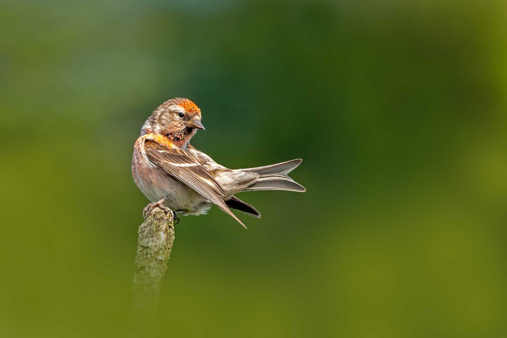
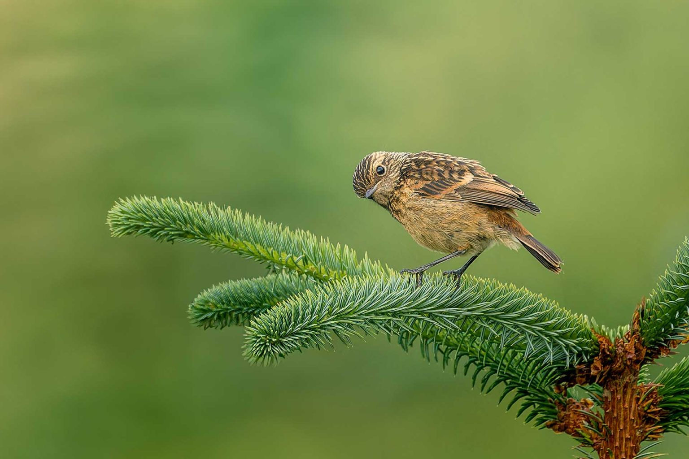
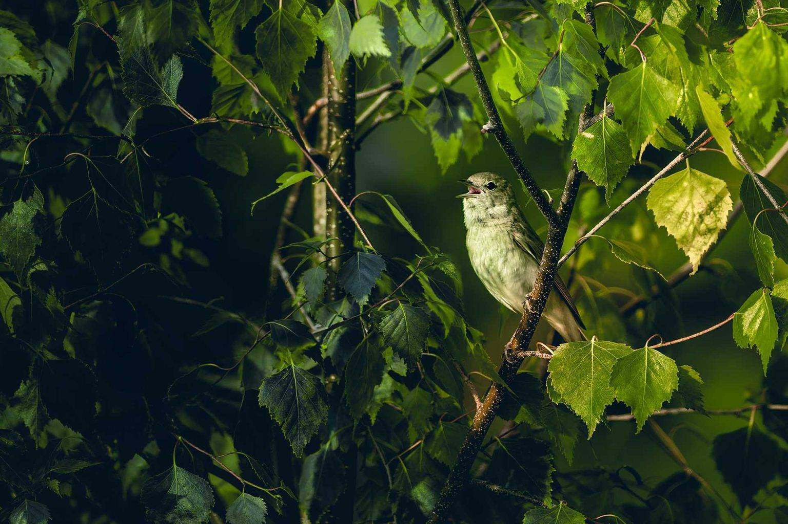
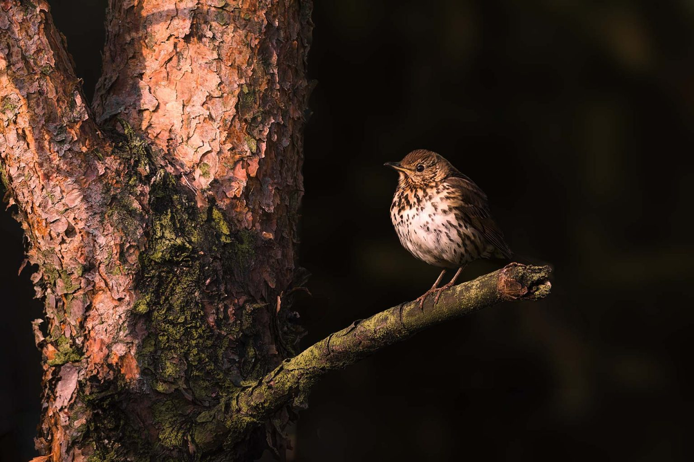
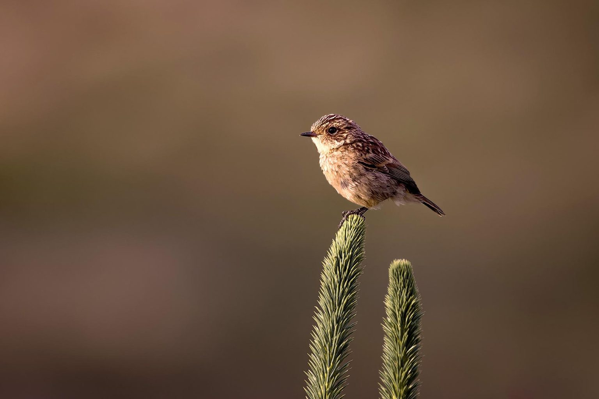
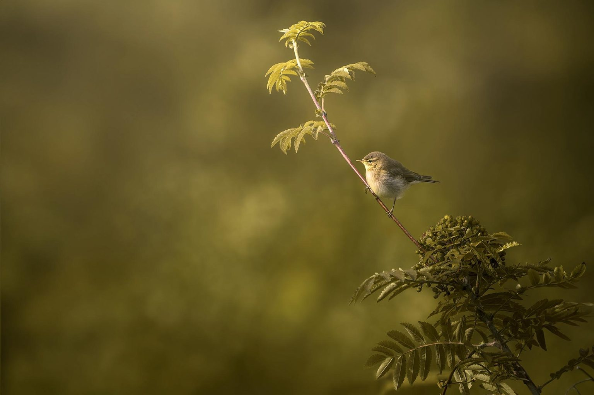
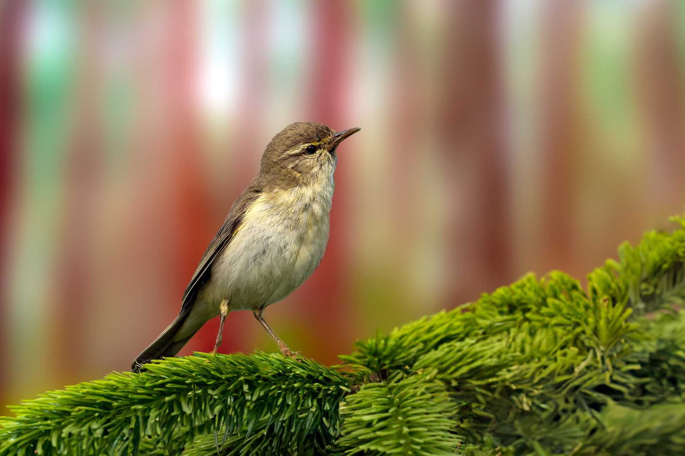

Hey wildlife enthusiasts and fellow photographers! Today, I’m thrilled to share with you my recent adventures of Cowley Brook Woods Wildlife Photography, a hidden gem located just a 15-minute drive from my home in Lancashire, UK.
Lesser Redpoll Pruning.
Nestled on Gannow Fell, adjacent to Longridge Fell and Jeffery Hill, this picturesque spot has become my go-to destination for capturing the beauty of nature. Join me as we explore the wonders of Cowley Brook Woods and the incredible wildlife it has to offer!
Female Stonechat on a pine
A Wildlife Haven:
Cowley Brook Woods is an enchanting location where wildlife flourishes, providing ample opportunities for wildlife photography any time of the day, as long as there’s daylight. From the moment you step foot into this natural haven, you’ll be surrounded by a diverse range of species that call it home.
Garden Warbler signing proudly
Feathered Friends Galore:
If you’re a fan of avian wonders, Cowley Brook Woods is a paradise for birdwatchers and photographers alike. During my visits, I’ve been lucky enough to spot and capture images of numerous species.
The area boasts a thriving population of Stonechats, which have been particularly abundant this year. The air is filled with the melodic songs of Willow Warblers, and the vibrant colours of Lesser Redpolls delighted me during my first encounter with them.
Kestrels gracefully soar above the treetops, while the majestic Ravens and noisy Red Grouse leave you in awe.
Juvenile Song Thrush learning about the world
Captivating Wildlife Encounters:
It’s not just the birds that steal the show at Cowley Brook Woods. Keep your eyes peeled for delightful surprises, such as the fleeting presence of a Brown Hare or the distinctive call of a Cuckoo echoing through the woods.
The Grasshopper Warbler’s mesmerizing song may entice you to follow its tune, and if you’re lucky, you might catch sight of a Hobby in action, skillfully hunting moths.
Additionally, charming species like Wrens, Robins, Dunnocks, Tree Pipits, Song Thrushes, Skylarks, Cuckoos, and Wheatears make appearances throughout the year, adding to the rich tapestry of wildlife in this area.
Female Stonechat on a pine treetop
Exploring Beyond the Beaten Path:
While Cowley Brook Woods is a popular spot for dog walkers, don’t let that deter you from venturing off the main paths. By exploring the lesser-trodden trails, you can uncover hidden corners where wildlife thrives undisturbed. It’s in these tranquil spots that you’ll find the perfect opportunities to capture intimate moments with the smaller birds that frequent the area.
Willow Warbler early morning
Embracing the Birdwatcher Within:
Throughout my journeys at Cowley Brook Woods and other local spots, I’ve discovered a growing passion for becoming more of a birdwatcher. Observing and documenting the behaviour of these incredible creatures has become just as rewarding as capturing them through my lens.
I now take pleasure in collecting records of my sightings and diligently updating them on my website, which has added a new dimension to my wildlife photography endeavours.
Willow Warbler early morning
The Magic of Golden Hours:
As I write this article in June, I can’t help but marvel at the seemingly everlasting golden hours that grace Cowley Brook Woods. The soft, warm light bathes the surroundings, casting a magical glow on the flora and fauna. It’s during these moments that nature truly comes alive, offering breathtaking opportunities for capturing stunning photographs.
Embracing Technology: Adobe Photoshop Beta AI:
Speaking of photography, I want to mention an exciting tool that has crept into my post-processing workflow—Adobe Photoshop Beta AI. This powerful tool offers incredible capabilities, particularly when it comes to cloning out unsightly branches and distractions in your wildlife images.
The AI cleverly redraws the area, producing seamless results that enhance the look and feel of your photographs. It’s a game-changer that opens up new creative possibilities.
It’s interesting to see how AI will change the world of Wildlife Photography. It is already at a point where you can ask the AI to change your image to become the perfect shot you can envision.
Kind of takes the skill out of getting great shots.
Commercially it will probably make a difference but for hobbyists and twitchers, the fun is in the process of getting great images.
Willow Warbler in the Wood
Cowley Brook Woods has undoubtedly become my sanctuary, where I can immerse myself in the wonders of nature and capture its intricate beauty through my lens.
The diversity of bird species, the captivating encounters with wildlife, and the ethereal golden hours all contribute to the allure of this remarkable location. So, grab your camera, head out to Cowley Brook Woods, and embark on your own adventure.
Discover the hidden treasures that await and share your experiences with fellow wildlife enthusiasts. Let’s celebrate the beauty of the natural world together!
Remember to engage with me by sharing your own wildlife photography stories or asking any questions you may have in the comments below.
Happy photographing!
Scott